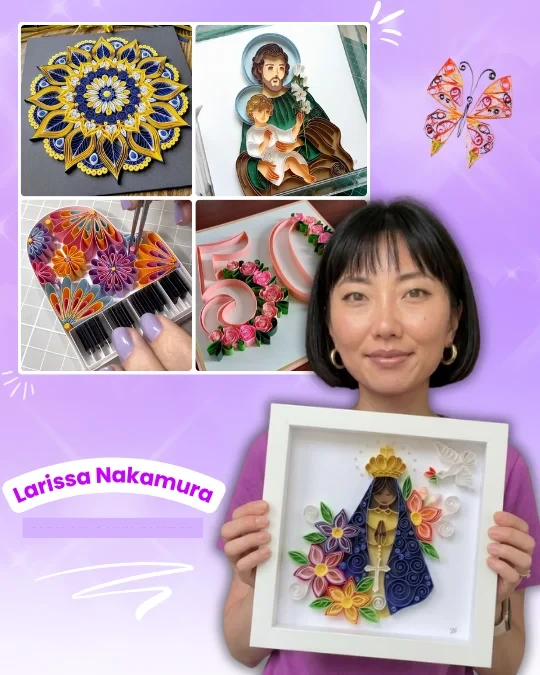
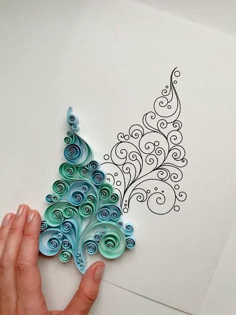
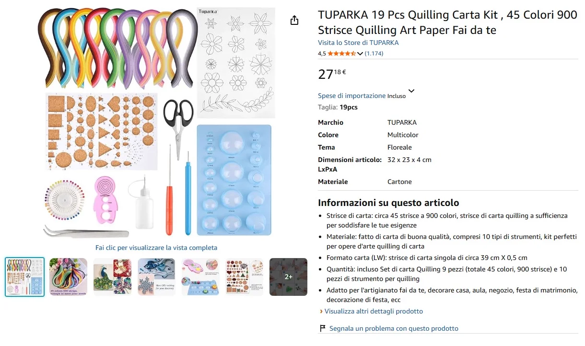
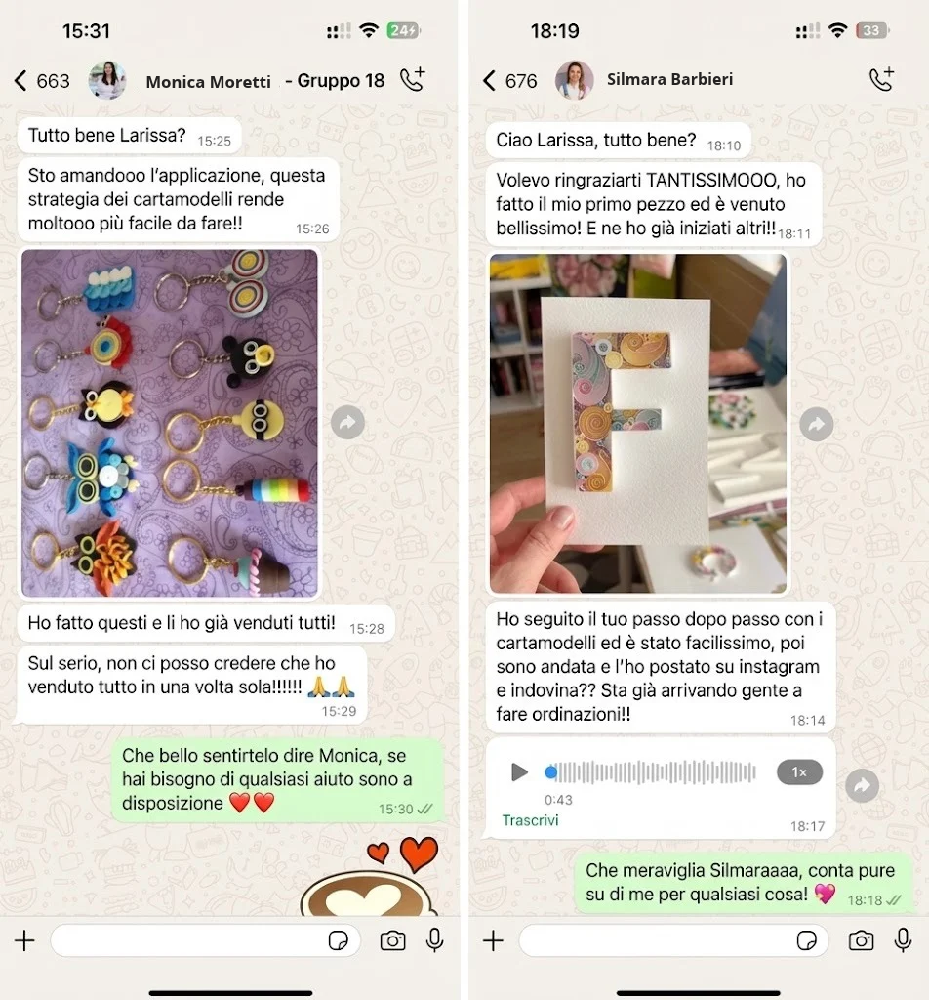

Scopri un modo semplice ed economico per creare splendide decorazioni in Quilling a casa tua, con un passo passo pensato per chi parte da zero.

E sai qual è la parte più bella? Ti insegno io, passo dopo passo, con i tuoi tempi e con materiali semplici che trovi ovunque.
Clicca sul pulsante qui sotto e ricevi il tuo percorso personalizzato!
Chiara Esposito · Napoli
Cercavo qualcosa per arrotondare a fine mese, senza dover spendere tanto. Quando ho scoperto la filigrana di carta ne ho visto subito il potenziale, ed è stata la decisione migliore che abbia mai preso!
Per iniziare, dimmi una cosa:
Qual è il tuo livello di esperienza con il Quilling?
Personalizziamo il tuo pacchetto in base alle tue risposte.
Sarà il tuo primo corso di
Quilling?
Personalizziamo il tuo pacchetto in base alle tue risposte.
Quanto tempo hai a disposizione per imparare?
Personalizziamo il tuo pacchetto in base alle tue risposte.
Cosa vorresti ottenere, più di tutto, con il Quilling?
Personalizziamo il tuo pacchetto in base alle tue risposte.
Una volta imparato a realizzare i tuoi lavori in Quilling, quale sarà il tuo obiettivo?
Personalizziamo il tuo pacchetto in base alle tue risposte.
Che stile di Quilling ti piacerebbe realizzare?
Puoi scegliere più di un'opzione
Personalizziamo il tuo pacchetto in base alle tue risposte.
Ma serve esperienza con i lavori manuali?

No
Il metodo che insegno, quello degli Schemi, è semplice e veloce. Con poche strisce di carta, in poche ore riesci già a creare lavori bellissimi semplicemente modellando e incollando la carta sullo schema: è così facile che ci riesce chiunque, anche chi non ha mai fatto niente di simile.
Tutti i lavori del corso seguono lo stesso procedimento e, seguendo il passo passo, realizzerai i tuoi pezzi di Quilling con facilità.
Il materiale costa caro?
Per niente! Su Amazon un kit completo, con 900 strisce e 10 attrezzi, costa meno di 30 €. E il bello è che con 900 strisce si realizzano circa 90 pezzi: vuol dire che ogni creazione ti costa più o meno 0,30 €. E un quadretto, una bomboniera o un biglietto fatto a mano vale molto, molto di più. Insomma, è un'arte che si comincia con una spesa minima e che ha un grande potenziale, anche se un giorno vorrai vendere le tue creazioni.

È senza dubbio una delle arti manuali più economiche in assoluto: puoi creare tantissimo spendendo pochissimo!
Guarda cosa scrivono le mie allieve del corso
Universo del Quilling!

Sei a pochi passi da un GRANDE cambiamento!
Stiamo creando un percorso su misura per te
Complimenti!
Hai tutti i requisiti per partecipare al corso UNIVERSO DEL QUILLING
Ecco tutto quello a cui avrai accesso nel corso
Universo del Quilling
✅ Accesso a vita: guardalo tutte le volte che vuoi
✅ Videolezioni in italiano che ti spiegano passo passo tutto quello che ti serve per imparare il Quilling
✅ Impara a realizzare quadretti decorativi e sacri, fiori, biglietti d'auguri e partecipazioni personalizzate, portachiavi, bijoux, bomboniere e molto altro!
✅ Come proporre e vendere i tuoi primi lavori, partendo anche da amiche e parenti
✅ Dove vendere le tue creazioni: online (Etsy, Facebook Marketplace) e ai mercatini
✅ Come farti conoscere e vendere sui social
✅ Come calcolare il prezzo giusto di ogni pezzo, coprendo materiali e tempo, senza svenderti
✅Come organizzare la produzione per riuscire a seguire più ordini
✅ Il metodo per trasformare le tue creazioni in un'entrata extra, con i tuoi tempi
✅ Idee e ispirazioni bellissime per Natale, Pasqua, Festa della Mamma, battesimi, comunioni e matrimoni
Guarda alcuni dei tanti lavori che inizierai a realizzare:


🎁 Ricevi 4 BONUS in regalo se ti assicuri il tuo posto ADESSO:
🎁 BONUS 1 – Calcolatore dei prezzi per sapere quanto chiedere per ogni pezzo, coprire materiali e tempo e non svenderti mai.
🎁 BONUS 2 – Assistenza intelligente 24 ore su 24, in italiano: qualcuno che ti prende per mano, risponde a tutti i tuoi dubbi e ti guida in tutto quello che ti serve.
🎁 BONUS 3 – Elenco dei fornitori per sapere dove comprare in tutta sicurezza, spendendo meno e con la migliore qualità
🎁 BONUS 4 – 50 schemi pronti da stampare per iniziare subito a esercitarti, pensati per farti imparare le tecniche con la pratica
NESSUN ABBONAMENTO - NESSUN COSTO NASCOSTO
Universo del Quilling
invece di 97,00 €, oggi a:
3x 9,00 €
oppure 27,00 € in un'unica soluzione
Con meno di 1 € al giorno (meno di un caffè al bar), hai accesso a un metodo completo, a un'app personalizzata in base alle tue risposte e all'assistenza per iniziare a creare (e, se vuoi, a vendere) con il Quilling
Affrettati! Prezzo di lancio e 4 bonus validi solo per le prossime 8 iscrizioni

Larissa Nakamura –
Creatrice del corso Universo del
Quilling, esperta in creazioni di Quilling che incantano e si vendono dal 2018.
Creatrice del corso Universo del Quilling e appassionata di lavori manuali dal 2017.
La mia storia è iniziata in modo semplice: guardavo mia mamma lavorare all'uncinetto, mi piaceva, ma lo trovavo difficilissimo. Poi ho scoperto la tecnica del Quilling, molto più facile e capace di dare vita a pezzi stupendi: me ne sono innamorata e ho iniziato a realizzare decorazioni, quadretti, bomboniere, biglietti e partecipazioni personalizzate. ✨
Mi sono specializzata nelle rifiniture, negli abbinamenti di colore e nelle strategie di vendita, e oggi vivo di ciò che amo: creare lavori artigianali belli, raffinati e che durano nel tempo.
Oggi ho già accompagnato oltre 3.000 allieve alla scoperta del Quilling. Voglio mostrarti che anche tu puoi trasformare la tua passione per i lavori manuali in qualcosa di tutto tuo, che può anche diventare un'entrata in più!
Guarda cosa dicono del corso le allieve della prima edizione:
Marta Colombo · Monza
Il metodo degli schemi semplifica tantissimo. Niente confusione, niente informazioni sparse qua e là. Pensavo di perdermi, ma con il modo in cui Larissa spiega nelle videolezioni è tutto molto più facile. Mi è piaciuto da matti! Lo consiglio a tutte le mie amiche!
Loredana Marino · Bari
Ho venduto il mio primo pezzo dopo 9 giorni, sono al settimo cielo!!! Ho fatto 2 quadretti: il primo l'ho tenuto per me e il secondo l'ho venduto. Ed è stato facilissimo, proprio come diceva Larissa: basta fare il primo lavoro. L'ho pubblicato su Instagram e mi sono piovute addosso le richieste, roba da non credere!
Laura Conti · Firenze
Quello che mi è piaciuto di più è che Larissa va dritta al punto. Niente giri di parole: nelle videolezioni ti fa vedere ogni passaggio, e tanti lavori li impari semplicemente guardando il video, lei li fa e tu la segui. Davvero, semplicissimo
Domande frequenti
Sì. Con l'acquisto di Universo del Quilling, l'accesso è a vita, senza abbonamenti e senza addebiti futuri. Puoi guardare le lezioni quando vuoi, con i tuoi tempi e per sempre!
Tutto il passo passo lo imparerai con videolezioni in italiano, dall'inizio alla fine. Così chiunque può riuscirci, anche chi non ha mai fatto quilling prima!
L'accesso viene attivato subito dopo l'acquisto. Lo riceverai all'indirizzo email che hai usato per acquistare.
Ricordati di controllare anche le cartelle Spam e Promozioni.
No. Il metodo è stato creato per principianti assolute. Si parte dagli Schemi, seguendo un passo passo semplice in videolezioni, anche se non hai mai fatto Quilling: ti basta fare esattamente quello che vedi nei video.
Il percorso si adatta al tempo che hai a disposizione. Con 20-30 minuti al giorno puoi già seguire le lezioni e iniziare a creare i tuoi lavori in Quilling. Vai al tuo ritmo, senza pressioni.
Sì. Hai 14 giorni di garanzia "soddisfatta o rimborsata", lo stesso periodo previsto per il diritto di recesso sugli acquisti online. Se il corso non ti piace, ti basta chiedere il rimborso entro 14 giorni dall'acquisto e ti restituiamo il 100% di quanto hai pagato, senza burocrazia.